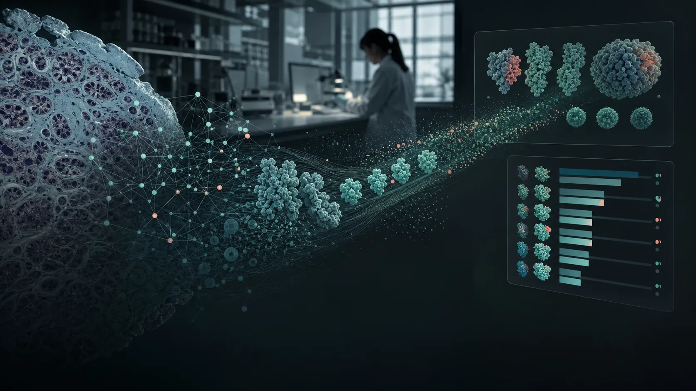

Project
Why TNBC needs a traceable route from evidence to vaccine candidates.Project overview →
Find. Weigh. Care.
Beth's evidence trail Patient-first evidence route ↗TNBC is not
one story.
One diagnosis can hide many molecular realities. The harder question is not whether we can generate candidates—it is whether we can explain why one deserves to move forward.
Same diagnosis.
Different tumours.
Triple-negative breast cancer lacks the familiar therapeutic receptors, yet every tumour carries a different combination of expression, mutation, immune context, and risk.
HETEROGENEITY · RECURRENCE · IMMUNE ESCAPEA strong signal
can still be wrong.
A candidate may be abundant in a tumour but present in healthy tissue; easy to present but unlikely to trigger a useful response; exciting in one dataset and absent in another.
ExpressionSafetyPresentationImmunityBuildability
What if the
choice itself
stayed visible?
Instead of hiding every assumption inside one score, we asked whether a shortlist could preserve the route from raw evidence to decision—and show where confidence ends.
Meet CirCure.
CirCure is our evidence-led route toward TNBC vaccine design. At its centre is Neo‑TNBsee: a reproducible workflow that does not merely rank candidates, but keeps the reason for every rank inspectable.
→ Enter Neo-TNBsee →Known targets.
New candidates.
One evidence matrix.
A-arm re-examines established tumour-associated antigens. B1 searches patient-derived proteogenomic candidates. Only after both routes remain explicit do they meet under the same five evidence dimensions.
A patient.
A pathway.
A living loop.
Our identity is not decoration. It maps how CirCure should decide: begin with the person, move through evidence, and return with a safer next question. Beth carries that rule through every chapter.
Patient before prediction.
The central profile keeps lived need and clinical context ahead of model performance.
A route that stays visible.
The pink path becomes our trace from candidate discovery to safety-aware prioritisation.
Evidence must return.
The outer loop represents DBTL, stakeholder feedback, and five dimensions that repeatedly challenge each claim.
A system built to weigh evidence.
→ Follow the Evidence →
02 / ENGINEERING
Two Arms. One Matrix.
A-arm stress-tests known TAAs. B1 searches proteogenomic candidates. Both pass through expression, normal-tissue safety, HLA presentation, immunogenicity, and constructability checks.
A known target audit
B1 new candidate discovery
5D shared evidence matrix
Open Judge Quick View
Judge Quick View
Claim. Evidence.
Claim. Evidence.
Decision. Limits.
Every core page follows the same review pattern so judges can find the argument without reconstructing it from scattered sections.
One matrix can compare two discovery strategies.
Known TAAs and new candidates remain separate until the comparison stage, preventing one route from silently defining the rules for the other.
Every score points back to a source layer.
Expression, normal-tissue baseline, HLA presentation, T-cell signal, and structural checks remain individually inspectable.
Safety is a gate, not a decorative score.
Human-practices and safety review moved off-target concerns earlier in the workflow and changed the shortlist logic.
Ranking is not clinical validation.
The output prioritizes candidates for testing. It does not claim efficacy, patient benefit, or readiness for clinical use.
03 / HUMAN PRACTICES
Feedback changed the workflow.
We treat stakeholder input as design evidence: who raised the concern, what changed, and where the change appears in the system.
→ Read the Decision Log →Listen. Change.
Show the consequence.
INPUTClinical relevance must remain visible beside model performance.
CHANGE
Separated evidence dimensions instead of collapsing everything into one opaque score.
WHERE IT LIVESModel / Evidence matrix ↗
INPUTNormal-tissue expression cannot be checked only at the end.
CHANGE
Moved safety filtering before final immunogenicity ranking.
WHERE IT LIVESSafety / Candidate gates ↗
INPUTFuture teams need a reproducible tool, not just our final table.
CHANGE
Defined containerized outputs, assumptions, failure logs, and reusable reports.
WHERE IT LIVESSoftware / Contribution ↗
At a glance
→ Back to Top →
Project Snapshot
Choose your route.
Start with the question you need answered; every route reconnects claim, evidence, decision, and limitation.
What remains usable
Deliverables
Each output is paired with assumptions, provenance, limitations, and a clear path for future teams to reproduce or extend it.
Ranked TNBC epitope list
Candidate-level evidence with explicit gates and confidence notes.
Reusable Neo-TNBsee software
Containerized workflow, parameter documentation, and failure-aware reports.
A-arm vs B1 strategy report
A transparent comparison of known and discovery-led routes.
Multi-epitope construct models
Order, linker, manufacturability, and structural sanity checks.
Reusable evidence schema
A common record for claim, source, score, decision, and limitation.
Stakeholder decision log
A trace from conversation to implementation—not a gallery of meetings.
Every required page.
Every claim findable.
The visual homepage is an entry point. Medal and prize evidence still lives on stable iGEM standard-page routes with quick summaries, internal links, references, and limitations.
/engineeringEngineering successCycle, evidence, failure, iteration
/human-practicesIntegrated HPInput, change, consequence
/modelModelAssumptions, validation, limitations
/softwareSoftware toolUse, reproduce, extend
/safety-and-securitySafetyHazards, gates, mitigations
/contributionContributionWhat future teams can reuse
/attributionsAttributionsOfficial form and timeline
/descriptionProject descriptionProblem, gap, response, evidence
Turning
Evidence Into
Care
Evidence to construct.
People at the centre.